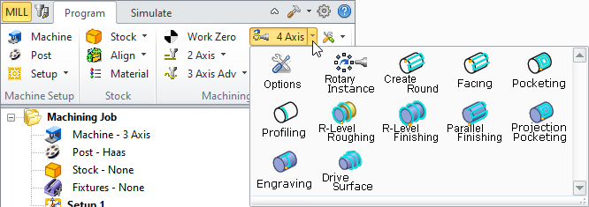

Available in: |
Xpress |
Standard |
Expert |
Professional |
Premium |
Fourth Axis operations are used to machine parts that cannot be machined with simple 2 ½ axis or 3 axis machining operations. Since the tool moves only up and down along the Z axis during 3 axis milling, areas that cannot be seen from above cannot be cut. In such cases, the object could be divided into top and bottom sections and machined separately. MILL module's implementation of indexed fourth axis milling allows you to do this automatically if the machine tool is equipped with a rotating head or table. Indexing refers to the ability of rotating the part about the X or Y axis and then performing machining in a 3 Axis fashion with the part locked at this new orientation.
This type of programming allows the machining of part geometry that have more than one side that needs to be machined. An example of a shape that cannot be machined with a simple 3 axis toolpath is a sphere. Only one half of the sphere can be machined using 3 axis operations. The other half needs to be approached from the flip side in order for this portion to be machined. Using an indexing head as the one shown will allow easy reorienting of the part. Note that in order to utilize 4 axis indexing you must have a CNC control that supports a fourth axis and a rotary table or native fourth axis that can be controlled by the CNC machine. |
 4 Axis Operations Menu
|
Shown below is a typical part that would require index 4 axis milling operations to manufacture the part. Notice that the part has undercut geometry when looking down from the top. This means that there are areas of the part, which cannot be reached by a straight tool moving purely up and down. To successfully machine this part, it will have to be divided into two halves. The top half needs to be machined first. Then, this part will have to be flipped over by 180 degrees and the bottom part machined.
It should be noted that MILL module allows for any user defined indexing angle and is not restricted to 180 degrees. This feature allows you to machine multi-sided parts and not just two sided parts as the one shown above. |
Before creating 4 axis toolpaths, you need to specify to the system the rotation axis (i.e., whether the rotation is about the X (A) or Y (B) axis). You also can specify the center of rotation. Obviously the center of rotation is dictated by how the part is fixtured in the table. It is a common programming practice to specify the machine zero to lie on the rotation axis and use the machine zero as the rotation center. This can be done by selecting the Machine Tool button in the Setup window of the Browser. Refer to Machine Setup for detailed description. |